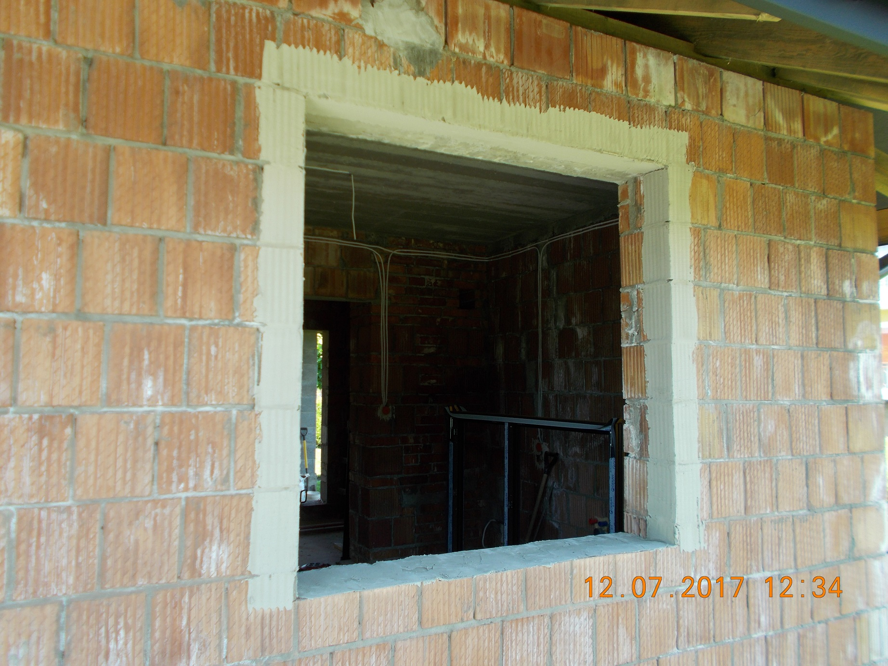
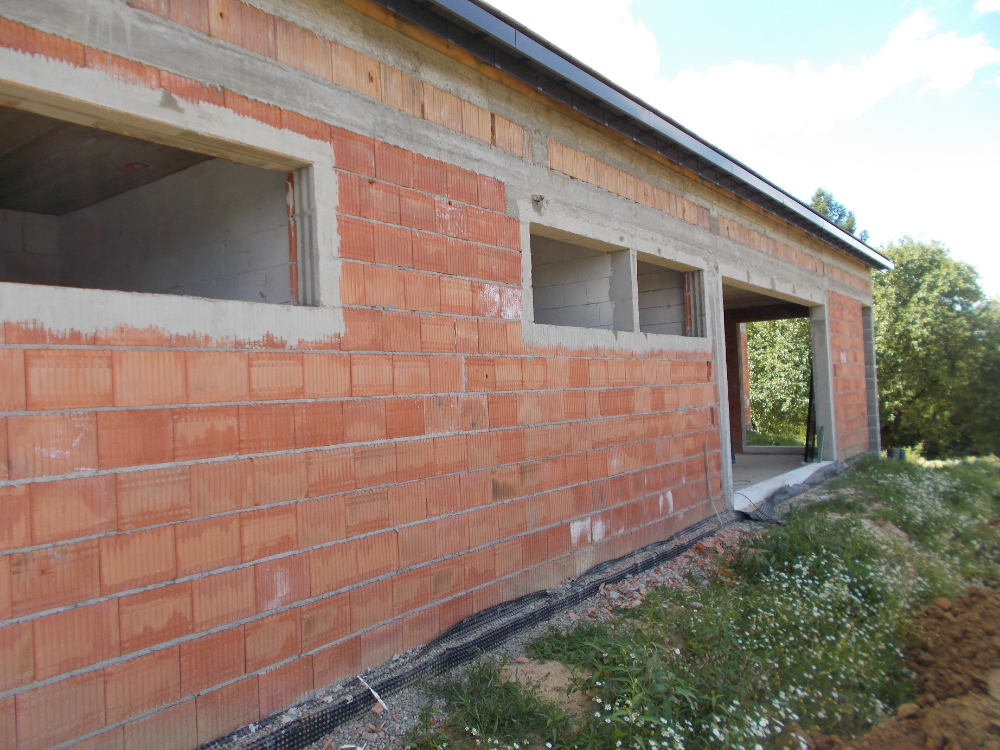
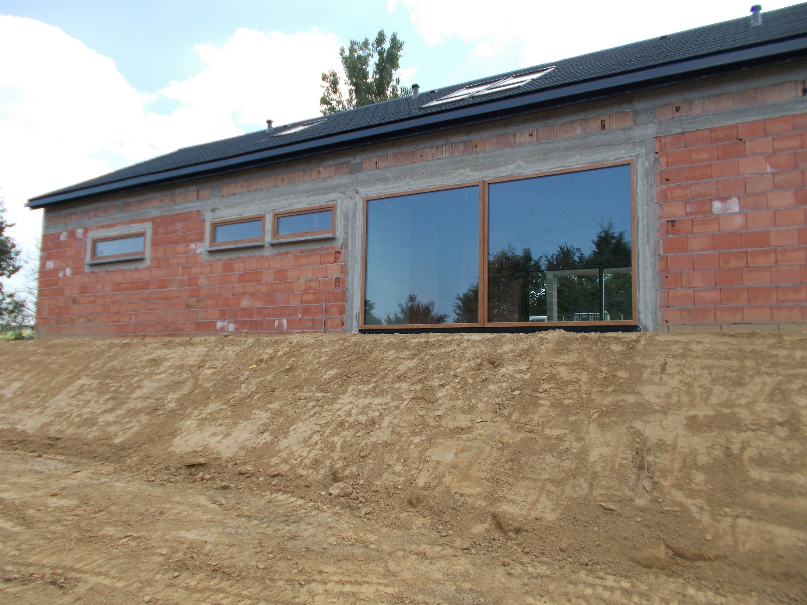
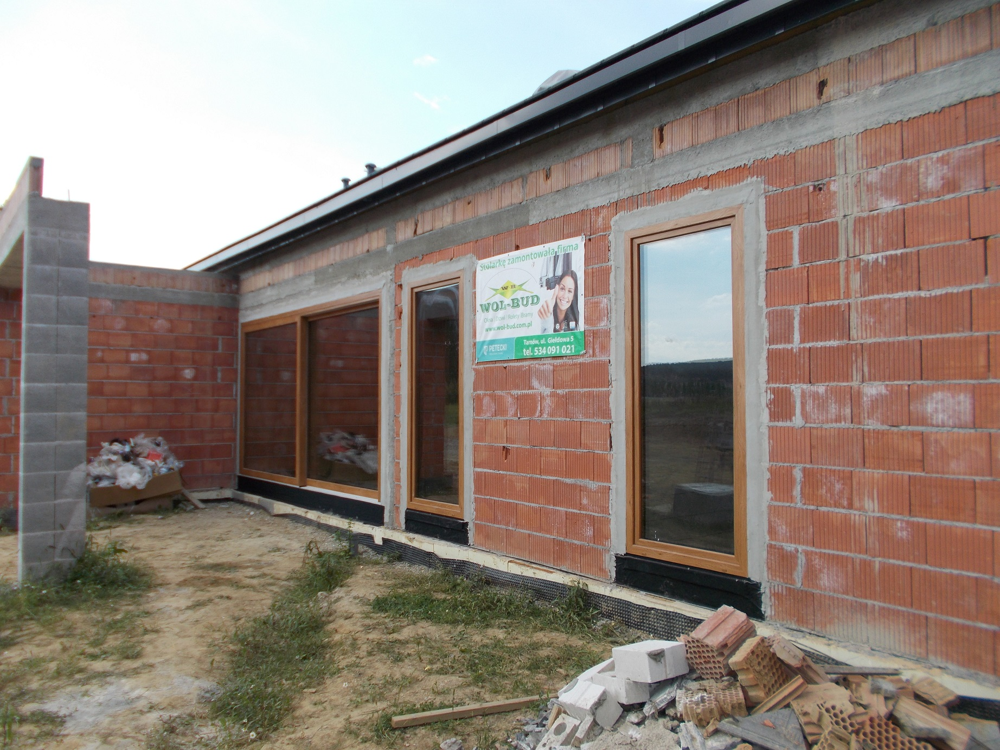
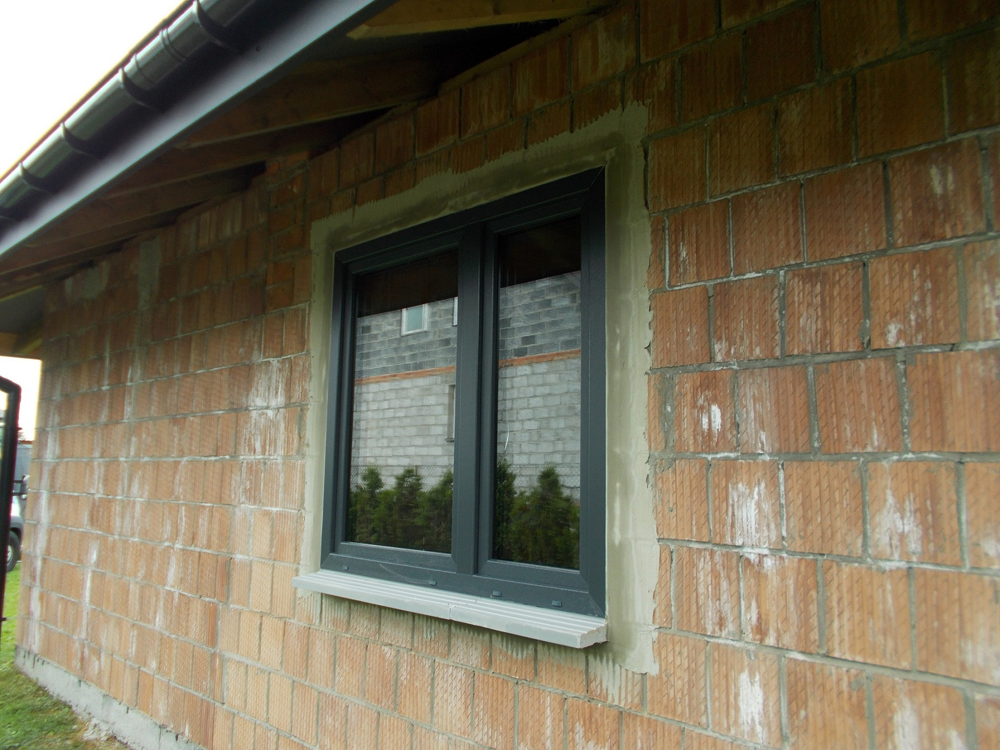
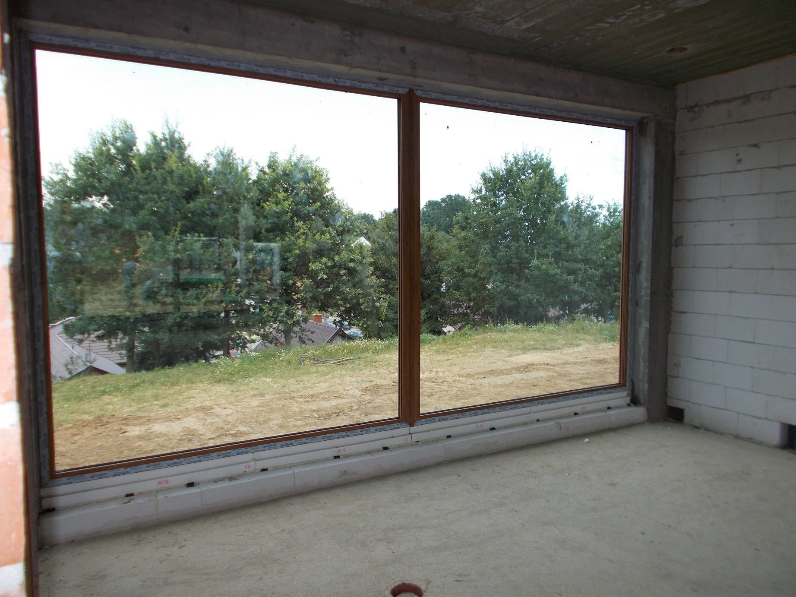
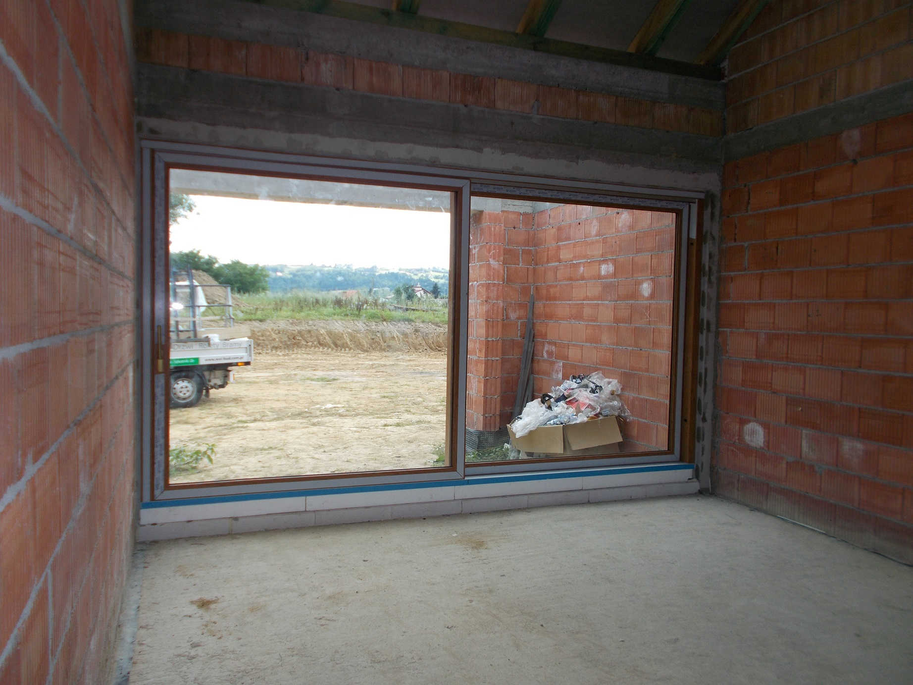

Ciepły montaż zapewnia wiele korzyści dla inwestora:
Sposób i harmonogram tego typu montażu wygląda w naszej firmie następująco:
Rewelacyjnym uzupełnieniem ciepłego montażu warstwowego jest zastosowanie termoparapetów podokiennych, które zapewniają:
Harmonogram wykonania krok po kroku

ETAP 01
wyrównanie otworów 1

ETAP 02
wyrównanie otworów 2
ETAP 03
wyklejanie folii 1
ETAP 04
wyklejanie folii

ETAP 05
zabezpieczenie folii

ETAP 06
zabezpieczenie folii 2
ETAP 07
zabezpieczenie folii od zewnątrz 1
ETAP 08
zabezpieczenie folii od zewnątrz 2

ETAP 09
termoparapet okienny

ETAP 010
termoparapet balkonowy

ETAP 011